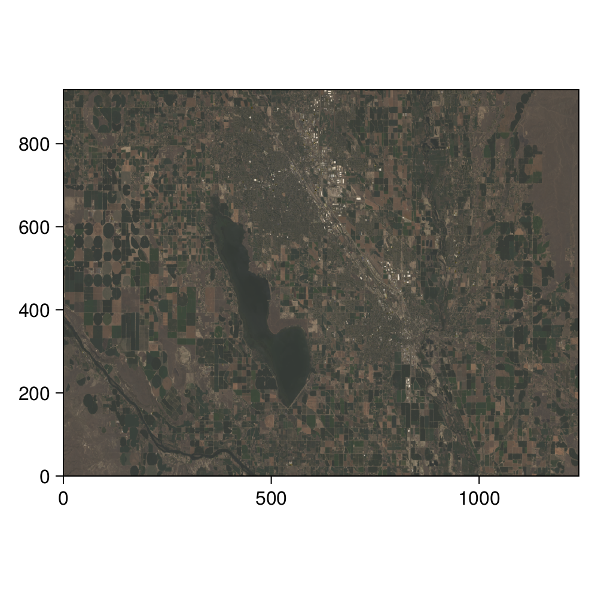

2 The k-means algorithm
As we mentioned in the introduction, a core idea of data science is that things that look the same (in that, when described with data, they resemble one another) are likely to be the same. Although this sounds like a simplifying assumption, this can provide the basis for a very powerful technique in which we create groups in data that have no labels. This task is called unsupervised clustering: we seek to add a label to each observation, in order to form groups, and the data we work from do not have a label that we can use to train a model.
2.1 A digression: which birds are red?
Before diving in, it is a good idea to ponder a simple case. We can divide everything in just two categories: things with red feathers, and things without red feathers. An example of a thing with red feathers is the Northern Cardinal (Cardinalis cardinalis), and things without red feathers are the iMac G3, Haydn’s string quartets, and of course the Northern Cardinal (Cardinalis cardinalis).
See, biodiversity data science is complicated, because it tends to rely on the assumption that we can categorize the natural world, and the natural world (mostly in response to natural selection) comes up with ways to be, well, diverse. In the Northern Cardinal, this is shown in males having red feathers, and females having mostly brown feathers. Before moving forward, we need to consider ways to solve this issue, as this issue will come up all the time.
The first mistake we have made is that the scope of objects we want to classify, which we will describe as the “domain” of our classification, is much too broad: there are few legitimate applications where we will have a dataset with Northern Cardinals, iMac G3s, and Haydn’s string quartets. Picking a reasonable universe of classes would have solved our problem a little. For example, among the things that do not have red feathers are the Mourning Dove, the Kentucky Warbler, and the House Sparrow.
The second mistake that we have made is improperly defining our classes; bird species exhibit sexual dimorphism (not in an interesting way, like wrasses, but you let’s still give them some credit for trying). Assuming that there is such a thing as a Northern Cardinal is not necessarily a reasonable assumption! And yet, the assumption that a single label is a valid representation of non-monomorphic populations is a surprisingly common one, with actual consequences for the performance of image classification algorithms (Luccioni and Rolnick 2023). This assumption reveals a lot about our biases: male specimens are over-represented in museum collections, for example (Cooper et al. 2019). In a lot of species, we would need to split the taxonomic unit into multiple groups in order to adequately describe them.
The third mistake we have made is using predictors that are too vague. The “presence of red feathers” is not a predictor that can easily discriminate between the Northen Cardinal (yes for males, sometimes for females), the House Finch (a little for males, no for females), and the Red-Winged Black Bird (a little for males, no for females). In fact, it cannot really capture the difference between red feathers for the male House Finch (head and breast) and the male Red Winged Black Bird (wings, as the name suggests).
The final mistake we have made is in assuming that “red” is relevant as a predictor. In a wonderful paper, Cooney et al. (2022) have converted the color of birds into a bird-relevant colorimetric space, revealing a clear latitudinal trend in the ways bird colors, as perceived by other birds, are distributed. This analysis, incidentally, splits all species into males and females. The use of a color space that accounts for the way colors are perceived is a fantastic example of why data science puts domain knowledge front and center.
Deciding which variables are going to be accounted for, how the labels will be defined, and what is considered to be within or outside the scope of the classification problem is difficult. It requires domain knowledge (you must know a few things about birds in order to establish criteria to classify birds), and knowledge of how the classification methods operate (in order to have just the right amount of overlap between features in order to provide meaningful estimates of distance).
2.2 The problem: classifying pixels from an image
Throughout this chapter, we will work on a single image – we may initially balk at the idea that an image is data, but it is! Specifically, an image is a series of instances (the pixels), each described by their position in a multidimensional colorimetric space. Greyscale images have one dimension, and images in color will have three: their red, green, and blue channels. Not only are images data, this specific dataset is going to be far larger than many of the datasets we will work on in practice: the number of pixels we work with is given by the product of the width and height of the image!
In fact, we are going to use an image with a lot more dimensions: the data in this chapter are coming from a Landsat 9 image Vermote et al. (2016), for which we have access to 7 different bands (the full data product has more bands, but we will not use them all.
| Band number | Information |
|---|---|
| 1 | Aerosol |
| 2 | Visible blue |
| 3 | Visible red |
| 4 | Visible green |
| 5 | Near-infrared (NIR) |
| 6 | Short wavelength IR (SWIR 1) |
| 7 | SWIR 2 |
From these channels, we can reconstruct an approximation of what the landscape looked like (by using the red, green, and blue channels) – this information is presented in Figure 2.1 . Or is it? If we were to invent a time machine, and go stand directly under Landsat 9 at the exact center of this scene, and look around, what would we see? We would see colors, and they would admit a representation as a three-dimensional vector of red, green, and blue. But we would see so much more than that! And even if we were to stand within a pixel, we would see a lot of colors. And texture. And depth. We would see something entirely different from this map; and we would be able to draw a lot more inferences about our surroundings than what is possible by knowing the average color of a 30x30 meters pixel.
But just like we can get more information that Landsat 9, so to can Landsat 9 out-sense us when it comes to getting information. In the same way that we can extract a natural color composite out of the different channels, we can extract a fake color one to highlight differences in the landscape; in Figure 2.2, we show such a fake color composite, that is particularly efficient at drawing our attention to the location of water in this area.
Both Figure 2.2 and Figure 2.1 represent the same physical place at the same moment in time; but through them, we are looking at this place with very different purposes. This is not an idle observation, but a core notion in data science: what we measure defines what we can see. In order to tell something meaningful about this place, we need to look at it in the “right” way.
So far, we have looked at this area by combining the raw data. Depending on the question we have in mind, they may not be the right data. In fact, they may not hold information that is relevant to our question at all; or worse, they can hold more noise than signal. Looking at Figure 2.1, we might wonder, “where are the fields?”. And based on our knowledge of what plants do, we can start thinking about this question in a different way. Specifically, “is there a series of features of fields that are not shared by non-fields?”. But this a complicated question to answer, and so we can simplify this by asking, “how can I combine data from the image to know if there is a plant?”.
One way to do this is to calculate the normalized difference vegetation index, or NDVI (Kennedy and Burbach 2020). NDVI is derived from the band data (we will see how in a minute), and is an adequate heuristic to make a difference between vegetation, barren soil, and water. Because we are specifically thinking about fields, we can also consider the NDWI (water) and NDMI (moisture) dimensions: taken together, these information will represent every pixel in a three-dimensional space, telling us whether there are plants (NDVI), whether they are stressed (NDMI), and whether this pixel is a water body (NDWI).
Because there are a few guidelines (educated guesses, in truth, and the jury is still out on the “educated” part) about the values, we can look at the relationship between the NDVI and NDMI data Figure 2.3. For example, NDMI values around -0.1 (note how there is a strong cluster of points here) are low-canopy cover with low water stress; NDVI values from 0.2 to 0.5 are good candidates for moderately dense crops.
By picking these three values, instead of simply looking at the clustering of all the bands in the raw data, we are starting to refine what the algorithm see, through the lens of what we know is important about the system.
2.3 The theory behind k-means clustering
In order to understand the theory underlying k-means, we will work backwards from its output. As a method for unsupervised clustering, k-means will return a vector of class memberships, which is to say, a list that maps each observation (pixel, in our case) to a class (tentatively, a cohesive landscape unit). What this means is that k-means is a transformation, taking as its input a vector with three dimensions (red, green, blue), and returning a scalar (an integer, even!), giving the class to which this pixel belongs. These are the input and output of our blackbox, and now we can start figuring out its internals.
2.3.1 Overview of the algorithms
2.4 Identification of the optimal number of clusters
2.5 Application: optimal clustering of the satellite image data
2.6 Alternatives and improvements
EM
k-median
k-medoids